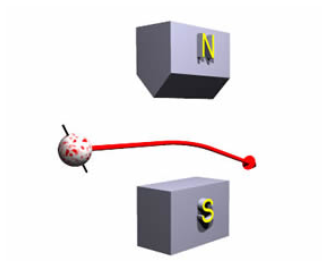
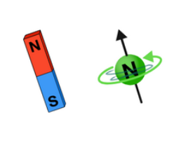
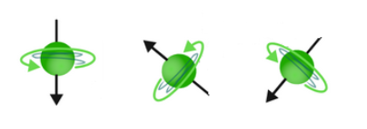
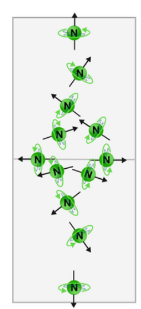
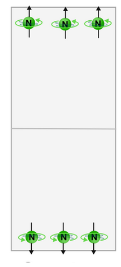
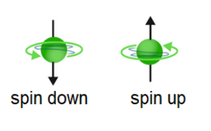

What is Spin?¶
There are many quantum objects that can be investigated to better understand their properties: we can look at photons (like in the double-slit experiment) or superconductors, or even single electrons. However, in this section we will get to explore a quantum property called spin. This property is used to create qubits, so it’s quite important!
You might remember from science classes that matter is composed of atoms, and atoms are made of positively charged protons, negatively charged electrons, and charge-less neutrons.
Let’s do a little thought experiment. Based on your knowledge of physics up until this point, if we shot a single neutron through a magnet, what would its trajectory be? If you don’t know what will happen, take a guess! We’ll walk you through the solution.

What will the trajectory be?¶
The neutron would deflect downwards towards the South pole
The neutron would pass straight through
The neutron would deflect upwards towards the North pole
Un-charged particles, like neutrons, do not typically experience a force when passing through a magnetic field.
Since the neutron is an uncharged particle, it would be expected to go straight through the magnets!
However, this is not what was observed. Small deflections — movements not in a straight line — were observed when a beam of neutrons was passed through these magnets. What is even more weird is that if the magnets were oriented in a different direction, the same trend in behavior was observed for the beam of particles.
Since the neutron is uncharged, the deflection had to be coming from the particle’s magnetic moment (its tendency to align with a magnetic field), and so physicists had to come up with a new property to explain this behaviour, called spin. You can picture neutrons as spinning about their axes like little planets, causing this magnetic moment that will allow the particle to behave as if it is charged. This allows the neutron to behave almost like a bar magnet in the magnetic field.

This can give you a better picture of what is happening. If you’ve ever played with magnets before, you know that opposite poles attract and like poles repel. If the neutron is like a little bar magnet, its movement will depend on whether it is oriented to experience an attractive or repulsive force.

How will the force on a tiny bar magnet change if it was flipped 180 degrees, to point ‘down’ instead of ‘up’?¶
The force would be half as strong
the force will be equally strong in the same direction
the force will be equally strong in the opposite direction
If a small magnet that has its North pole facing the big magnet’s North pole is suddenly flipped, its South pole will not be facing the big magnet’s North pole. The force will become attractive instead of repulsive.
What do you think would happen if we repeated the experiment with many neutrons? From a classical perspective, each particle could behave like a bar magnet oriented in a completely arbitrary direction. The spins of a set of neutrons could look like this:

If this beam was passed through the large magnets, there would be a continuous distribution of particles on the screen, each corresponding to different forces experienced due to the orientation of the internal ‘bar magnet’ of the neutrons:

However, in reality it was observed that the neutrons landed at only two places on the screen.

You can think of this as the neutrons acting like little magnets either perfectly aligned to experience the maximum attractive or repulsive force, and ending up at the extreme points on the screen. This ‘perfect alightment’ gave rise to two option for the spin of the particle, which was called ‘spin up’ or ‘spin down’, as shown below:

We’ve observed something called quantization in action! Quantization is something that happens when properties of quantum objects can only take discrete (for example, up or down) as opposed to continuous (for example, arbitrarily oriented spins).
Spin is a quantum property shared by all particles. We know that matter is made of extraordinarily large numbers of these particles (protons, neutrons, and electrons). So why don’t we observe quantum properties, like spin, in everyday objects?
What do you think?
Quantum effects only become visible on very small size scales, where we can observe small numbers of particles. When looking at human-sized objects that contain billions of particles, quantum effects tend to average out for the mass of particles, leading objects to behave normally. Hitting a baseball won’t send it flying to the nearest Pole!